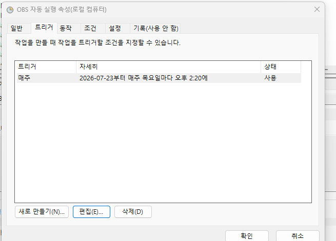

Step 3
🎯 멘토 필수 미션
개강 전에 반드시 완료해야 하는 2가지 미션입니다. 각각 기한이 다르니 일정에 맞춰 진행해 주세요.
MISSION 1
개강 전주 수요일까지 · 최초 1회
자동 녹화 테스트 제출
STEP 2에서 세팅한 녹화 환경이 실제로 동작하는지 확인하는 미션입니다. 예약 시간을 10분 뒤로 임시 변경해서, 자동 실행 → 자동 녹화 → 종료 후 드라이브 업로드까지 스스로 돌아가는지 확인합니다.
직접 OBS를 켜서 녹화하면 예약이 정상 동작하는지 확인할 수 없습니다. 반드시 예약을 통해 테스트해 주세요.
테스트 진행 순서
1
예약 시간을 10분 뒤로 임시 변경하고 화면 캡처하기
Windows : 작업 스케줄러 → 만들어 둔 작업 더블클릭 → '트리거' 탭 → 편집 → 시간을 10분 뒤로, 요일은 오늘 요일에 체크
Mac : 터미널에서
설정을 마친 화면(예약 시각이 보이는 화면)을 캡처해서 저장해 두세요. 7번에서 녹화본과 함께 드라이브에 제출합니다.

Mac : 터미널에서
crontab -e 입력 → 키보드 i 키 클릭 → 분, 시, 요일을 오늘 기준 10분 뒤로 수정 → Esc → :wq 입력
설정을 마친 화면(예약 시각이 보이는 화면)을 캡처해서 저장해 두세요. 7번에서 녹화본과 함께 드라이브에 제출합니다.

🖥 Windows · 작업 스케줄러 > 해당 작업 속성 > '트리거' 탭
🍎 Mac · 터미널
crontab -e 입력 화면2
OBS를 완전히 종료하고 대기
PC는 켜 둔 채로, 잠금 화면/절전 모드로 들어가지 않도록 해주세요.
3
자동 실행·녹화 시작 확인
설정한 시간에 OBS가 자동으로 실행되고, OBS 하단의 녹화 카운터가 흐르면 성공입니다. 실행/녹화가 되지 않을 경우 STEP 2의 자동 실행 설정을 다시 확인해 주세요.
4
2분 이상 테스트 녹화
디스코드 음성 채널에서 1) 마이크, 2) 영상·음악 재생(스피커), 3) 화면 공유 또는 캠이 모두 한 번씩 테스트되도록 합니다.
5
녹화 종료
'녹화 중단' 버튼 또는 F9(Mac: fn + F9) 키로 종료합니다.
6
드라이브 자동 업로드 확인
드라이브 앱에서 동기화되어 멘토님 전용 폴더에 파일이 생성되면, 드라이브 웹에서 소리 출력과 화면 재생이 정상적인지 확인합니다.
7
1번에서 캡처한 예약 화면을 같은 폴더에 업로드
녹화본이 올라간 같은 드라이브 폴더에 캡처 이미지를 함께 올려 주세요.
OBS 녹화본의 파일명은 녹화가 시작된 시각입니다. 이 시각이 캡처해 둔 예약 시각과 맞으면, 수동이 아니라 예약대로 자동 녹화되었다는 점이 확인됩니다.
OBS 녹화본의 파일명은 녹화가 시작된 시각입니다. 이 시각이 캡처해 둔 예약 시각과 맞으면, 수동이 아니라 예약대로 자동 녹화되었다는 점이 확인됩니다.
8
예약 시간을 실제 멘토링 시간으로 원복 ⚠️
마지막으로, 테스트용으로 바꿔 둔 예약을 멘토링이 진행되는 요일의 수업 시작 10분 전으로 반드시 되돌려 주세요.
이 단계를 놓치면 실제 멘토링 날 녹화가 시작되지 않습니다.
이 단계를 놓치면 실제 멘토링 날 녹화가 시작되지 않습니다.
제출 기한: 개강 전주 수요일까지
미제출 시 운영팀이 별도 확인 연락을 드릴 예정입니다.
미제출 시 운영팀이 별도 확인 연락을 드릴 예정입니다.
MISSION 2
개강일 · 약 15분
자기소개 작성 및 첫인사
수강생이 멘토님을 처음 만나는 순간입니다. 개강일에 맞춰 LMS 자유게시판과 디스코드 소통 채널 두 곳에 인사를 남겨 주세요.
📝 LMS 강의실 자유게시판
- 기록용 : 언제든 다시 찾아볼 수 있는 글
- 경력·전문 분야 중심으로 조금 더 자세히 소개합니다.
💬 디스코드 소통 채널
- 대화용 : 짧고 편안한 톤으로 소통
- 첫 멘토링 일시를 안내하고, 질문 창구를 엽니다.
1. LMS 강의실 자유게시판 · 자기소개 작성
접속 경로
- LMS 사이트 로그인 > 나의 강의실 > 담당 클래스/기수 강의실 입장 > 자유게시판 > 글쓰기
글에 담기면 좋은 항목
- 성함(또는 활동명)과 한 줄 소개
- 현재 직무와 경력 연차 (공개 가능한 범위 내)
- 주요 작업 분야 또는 프로젝트
- 특히 도움드릴 수 있는 주제 : 툴 활용, 포트폴리오, 실무 프로세스, 취업 고민 등
- 멘토링 진행 요일과 시간
2. 디스코드 소통 채널 · 첫인사
보내기 전 확인
- 서버 닉네임이 "성함(멘토)" 형식인지 확인
- 담당하는 반별 소통 채널이 맞는지 확인 (여러 반을 맡으신 경우 특히 주의)
첫인사에 담을 내용
- 환영 인사와 간단한 자기소개 : 자세한 소개는 LMS 게시글로 안내
- 첫 멘토링 일시 리마인드 : 멘토링은 개강일의 다음 주차부터 시작됩니다.
- 질문 창구 안내 : 과제 질문은 개인 DM보다 반별 소통 채널에 남기도록 안내해 주세요. 한 사람의 질문이 반 전체에 도움이 됩니다.
- 수강생 자기소개 유도
- 답하기 쉬운 질문 하나 : 첫 반응을 이끌어내는 가벼운 질문
이 두 가지를 기한 내에 반드시 완료해 주세요.
1. 녹화 테스트 제출 + 예약 시간 원복 (MISSION 1)
2. LMS 자기소개 + 디스코드 첫인사 (MISSION 2)
1. 녹화 테스트 제출 + 예약 시간 원복 (MISSION 1)
2. LMS 자기소개 + 디스코드 첫인사 (MISSION 2)